What did you learn last lesson?
What does CSS do?
- Styles the page
- Can provide animations
- Makes things look good!
What does CSS stand for?
Cascading Style Sheets.
This means that styles are applied in a cascade, with styles declared lower down in the file taking precedence over earlier styles (all else being equal).
Syntax
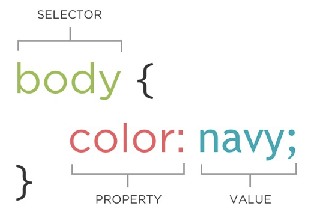Ways of writing CSS
There are four ways to style content on your website. These are:
- Using a style tag
- Using the style attribute
- Using JavaScript to style content
- Linking to an external stylesheet
Using a style tag
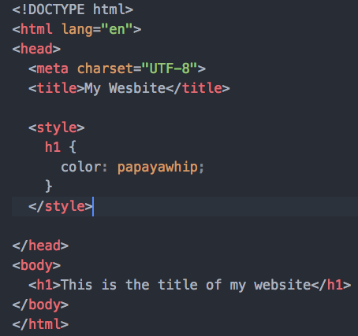Using the style attribute
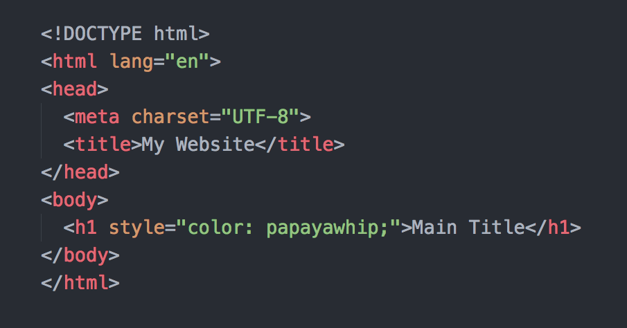Using JavaScript to style content
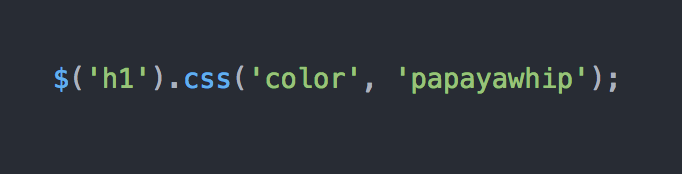Linking to an external stylesheet
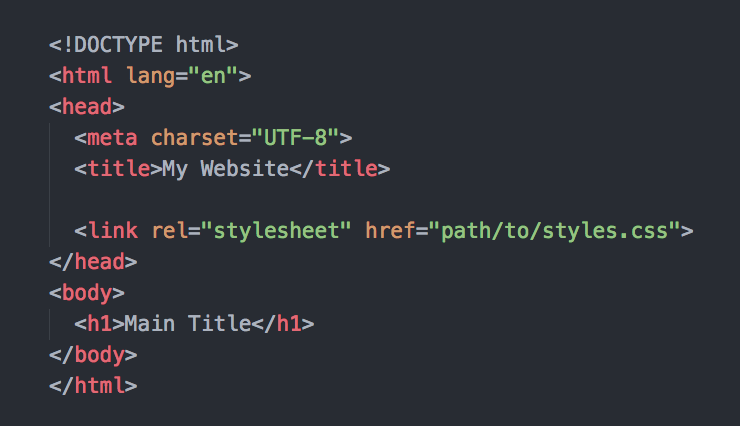Always link to an external stylesheet!
Where to link?
It is always best to link to your stylesheet(s) in the <head> tag.
This is so that the styles are loaded before the content is rendered.
File paths
There are two ways to link to a file. One is by using a 'relative' path and the other is using an 'absolute' path.
Anybody know the difference?
Relative path
Relative paths take into account the location of the file the code is written in. It then allows for a path to be outlined from the file where the declaration is made, to the file where the link is being made.
There is a specific syntax to use when writing relative paths:
- '.' denotes the current working directory
- '..' means to jump back one level to the parent directory
- '/' is used to show where a file/directory name begins and ends
Let's have a go at linking some files in a test project.
Relative paths
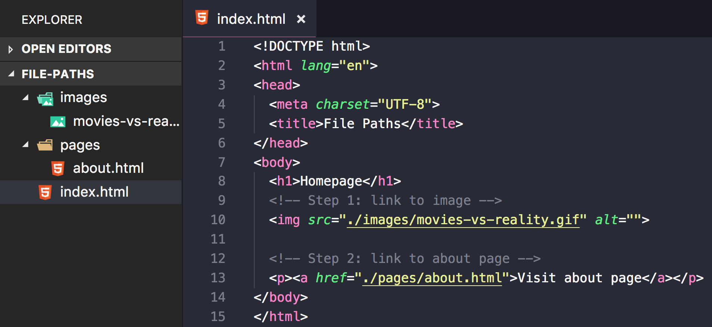Absolute path
An absolute path can either be a path that is absolute on the current drive/server or a full URL. Below is an example of an absolute path using the full URL to point to the image at a 3rd party site (not recommended).
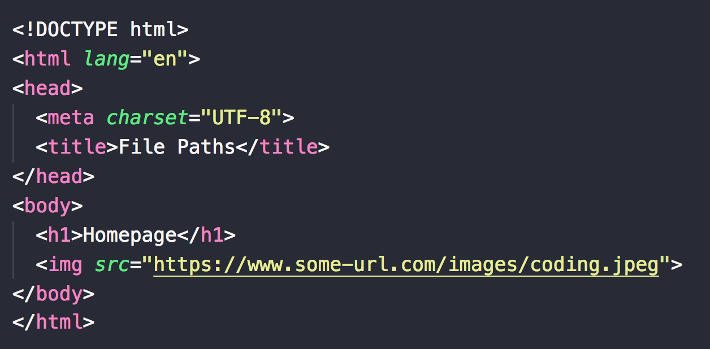Image asset file formats
Different file formats have different properties:
-
.pngSupports transparency and semi-transparency, great for logos, icons, and repeating background tiles. -
.jpegNo transparency, can be stored at different compression levels with varying amounts of "lossy-ness", typically the best format for photos. (Try to balance between photo quality and file size.) -
.gifCan have basic transparency and can cycle through a number of images, providing an animated asset.
File naming
It is useful to develop a consistent strategy for naming files. Here are some good guidelines to start implementing:
-
Never use spaces when naming a file.
-
Use either '-' or '_' to separate words. It doesn't matter which, but be consistent.
-
Use only lowercased letters.
CSS Selectors
Selectors
-
The element 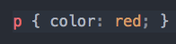
-
An ID 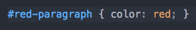
-
A class 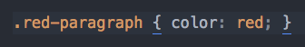
-
An attribute 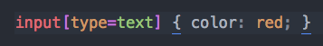
-
A stateful pseudo-class 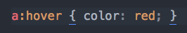
-
A positional/number based pseudo-class 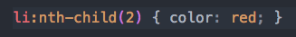
The DOM
The Document Object Model (DOM) provides a virtual representation of your markup. Once the document (your page) is parsed by the browser, the DOM renders your code as a group of 'nodes'.

Specificity
Determines how specific your selectors are.
As a rule of thumb, CSS code is easiest to manage when your selectors are specific enough to target the required element, but not so specific that there may be knock-on consequences for other, similar elements.
This is because more specific selector chains will override less specific ones.
Calculating specificity
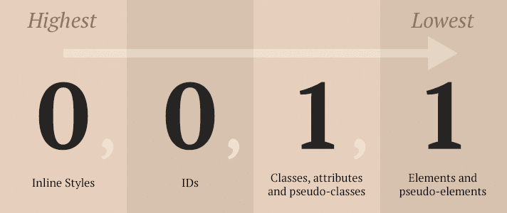Credit: Web Dev Studios
Codepen Example
Click here
What to use for styling
It's advisable to avoid putting these 3 things in your selector chains:
-
IDs: Should only be used for JavaScript interaction
-
Inline styles: Very hard to maintain code if styling is in multiple locations
-
!important flag: things are going seriously wrong if you find a lot of these dotted around your code!
Inheritance
Some CSS styles can be handed down from the parent element to all of its children. This is known as inheritance.
You can find out which CSS properties are inherited by checking the 'inherited' column in this W3C table.
Codepen Example
Click here
CSS Colours
CSS colors (actually how to spell it in CSS!)
When declaring colours in CSS, there are 6 different options available to you:
- Keyword
- Hex code
- RGB
- RGBa
- HSL
- HSLa
Keyword
As you have already seen, there are some keywords for CSS colours,
such as black, white, red.
Or if you want to go very random: blanchedalmond,
palegoldenrod, peachpuff, whitesmoke,
or my personal favourite papayawhip.
Hex
Hex code values range from 0 (lowest) to F (highest) with the first two numbers representing red, the second two green and the final two blue.

RGB and RGBa
RGB is written as 3 values ranging from 0-255. The first unit is
for red, second for green and third for blue e.g. rgb(0,100,0) would
be a dark-ish green.
RGBa is the same as RGB, only a fourth value is added ranging from 0-1.
This unit represents transparency with 0 being fully transparent and
1 being solid e.g. rgba(0,100,0, 0.5) would be the same colour as before,
but slightly transparent.
HSL and HSLa
HSL is typically the least used colour unit in CSS.
The numbers correspond to the hue, saturation and lightness of the colour. Hue is expressed as a degree angle measure. Saturation is expressed as a percentage, with 100% being a fully saturated color, and 0% being a shade of gray (no hue). Lightness is also expressed as a percentage, 0% being black, and 100% being white.

Build your two page portfolio website.
Note: You will need to experiment with margin, padding
and border CSS properties for this assignment.
Bonus: Read this article about Git and version control, as we will be pushing our assignment code up to our own repositories next week.
Further notes:
- Always make sure you have an index.html file at the root level of your project
- For this course, avoid adding an extra folder for your HTML files. Keep all HTML files at the root level
- Review the file naming tips slide and be sure to start as you mean to go on with sticking to good file naming conventions
Key Takeaways
-
Always link to an external stylesheet
-
CSS stands for Cascading Stylesheets, meaning styles are applied in a cascade. Therefore (all else being equal) the final declaration on an element will be applied.
-
The DOM is a tree-like representation of your HTML structure